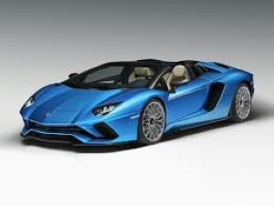
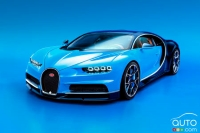

▀▄▀▄▀▄𝘼𝙗𝙙𝙪𝙡'𝙨 𝘼𝙢𝙖𝙯𝙞𝙣𝙜 𝘾ar 𝙋𝙖𝙜𝙚!▄▀▄▀▄▀
- This is the lamboghini Aventadour S

The first ever Aventadour was made in Febuary 28, 2011!. If you dont know what an Aventadour is, its a special sports car that is really fast and looking more amazing in person. It was made to be a grand touring car but now everyone usually drive around with it, as a kind of way to show off there money!
Coming in at number 2 we have one of the most futuristic lambo ive ever seen!
This car comes to the price about £3.9m but in Canadian its over 6.6m!, this car mostly comes in a green colour and was invented by centro stile made this car!, It was made to to provide the ultimate virtual car for young fans and gamers, who are ultra-enthusiastic about Lamborghini and its futuristic aspirations.The Lambo V12 Vision Gran Turismo was developed by the Team of Centro Stile Lamborghini in Sant'Agata Bolognese, led by director of design Mitja Borkert. After going from initial sketches to a 1:3 digital model — approved by Kazunori Yamauchi and Mitja Borkert — a full-size model was developed in 2018 and 2019.
Next Up we have the Buggati Chiron!

Bugatti Chiron: Worthy Successor to Veyron
The Bugatti Chiron is renowned for its exceptional performance and engineering prowess. It features a powerful quad-turbocharged 8.0-liter W16 engine, which produces an astounding amount of horsepower.